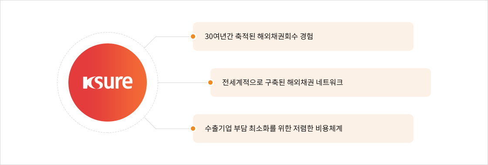
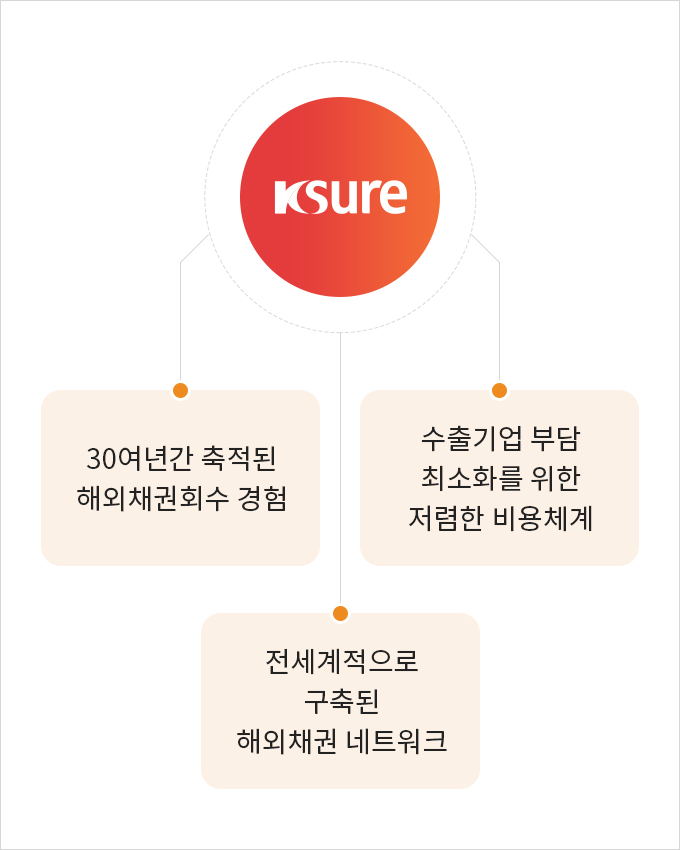

해외채권 회수지원 서비스
해외채권 회수지원 서비스
수출거래에서 대금을 회수하지 못할 경우 K-SURE의 축적된 노하우를 통해 미수채권 회수를 지원합니다.
Why K-SURE?


- 30여년간 축적된 해외채권회수 경험
- 전세계적으로 구축된 해외채권 네트워크
- 수출기업 부담 최소화를 위한 저렴한 비용체계
※ 수수료 비용은 채권회수대행 단계에서 발생하며 상담단계에서는 부과되지 않습니다.
이용절차
01상담신청
- 해외미수채권으로 고민중이신가요? 상담신청해보세요!
02회수전략 컨설팅
- 배정된 담당자가 채권특성에 알맞은 맞춤 회수전략을 컨설팅해드립니다
필요시 “해외채권 회수대행 서비스“ 이용
* 해외채권 회수대행 서비스란?
해외미수채권에 대해 K-SURE가 해외 네트워크를 통해 채권회수를 대행하는 서비스
03해외채권 회수대행* 신청 및 접수
- 1차 상담 후 필요서류 제출하여 추심대행의뢰 진행 가능합니다.
- 해외채권 회수대행 : 해외미수채권에 대해 K-SURE가 해외 네트워크를 통해 채권회수를 대행하는 서비스
04추심진행
- 단계별 추심 진행 후 진행현황을 안내드립니다.
05추심성공/실패 및 추심 종결
- 회수 성공시 회수금 및 수수료를 정산하고 회수가 불가능해지거나 추심실효성이 없는경우 채권을 종결합니다.